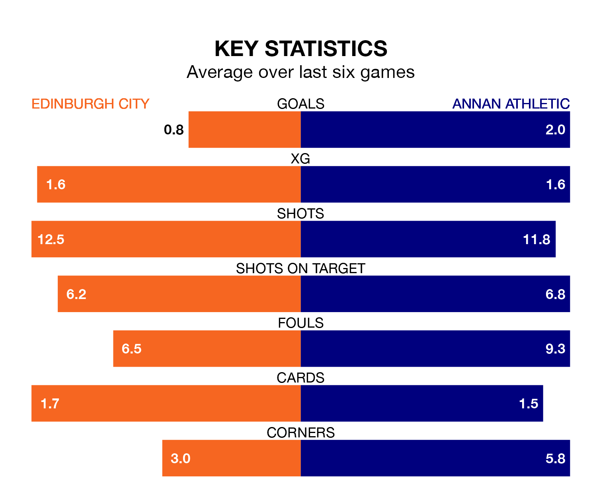

Struggling Edinburgh City face Annan Athletic at the Meadowbank Stadium on Saturday looking to build on a win in their last league outing.
After securing all three points with a 1-0 victory over Montrose on Tuesday, Edinburgh sit bottom of League One.
They travel to play an Annan side eighth in the standings, who also won their last match, 4-2 against Cove Rangers, on April 13.
Edinburgh are in bad form in League One, with one win and five losses from their last six games.
With three wins and two draws over that period, Annan's form is much better – they have taken 11 points from 18, compared to City's three.
In the last 10 years, Edinburgh and Annan have played each other on 27 occasions. Edinburgh won 15 of them, Annan 10, and they drew twice.
On average, Edinburgh scored 1.8 goals and the Galabankies 1.3 in those matches.
Their last meeting was on January 27, when Annan won 3-0 at home.
With 35 goals in 33 games so far this season, the home side are the league's joint-second-lowest scorers with 1.1 goals per game. And they are conceding more than average, letting in 90 goals at a rate of 2.7 per game.
Athletic are also below average scorers, with 1.5 goals per game, compared to a league average of 1.6. They have conceded 1.9 goals per game.
In Thomas Goss, the Galabankies have one of the league's most on-form strikers so far this season. He has notched 10 goals in 29 appearances, to sit fifth in the scoring charts.
His goal rate of one every 230 minutes is slightly quicker than that of Robert Mahon, Edinburgh's top scorer with a goal every 137 minutes, and a total of seven goals in 16 games.
Updated: 15:40 (UTC), 18/04/24